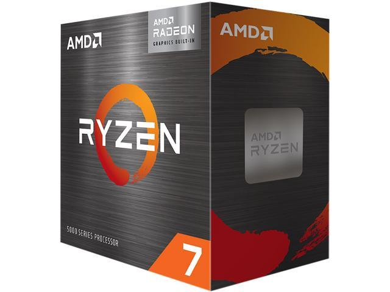

|  | (AMD) is an American multinational semiconductor company based in Santa Clara, California, that develops computer processors and related technologies for business and consumer markets. While it initially manufactured its own processors, the company later outsourced its manufacturing, a practice known as going fabless, after GlobalFoundries was spun off in 2009. AMD's main products include microprocessors, motherboard chipsets, embedded processors, graphics processors, and FPGAs for servers, workstations, personal computers, and embedded system applications. |
Advanced Micro Devices was formally incorporated by Jerry Sanders, along with seven of his colleagues from Fairchild Semiconductor, on May 1, 1969. Sanders, an electrical engineer who was the director of marketing at Fairchild, had, like many Fairchild executives, grown frustrated with the increasing lack of support, opportunity, and flexibility within the company. |
|